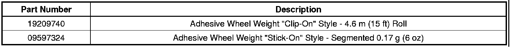

Wheels/Tires - Replacement Wheel Weight Information
INFORMATIONBulletin No.: 09-03-10-017
Date: December 17, 2009
Subject: Information on Replacement Wheel Weights
Models:
2010 and Prior GM Passenger Cars and Light Duty Trucks (including Saturn)
2010 and Prior HUMMER H2, H2 SUT, H3
Important
GM recommends that all dealers replace any existing inventory of lead wheel weights with approved, non-lead weights. The EPA and some states (particularly California) are pressuring for the elimination of lead wheel weights. California dealers who continue to use lead wheel weights after December 31, 2009 may be subject to suit under Proposition 65. If lead weights are scrapped, GM suggests they be sent to a lead recycler for proper disposal.
Wheel Weights Available from GMSPO
GM has replaced all former styles of wheel weights with two designs of lead-free, clear-coat safe, adhesive-backed weights. The first design replaces all "clip-on" style of weights and the second replaces all "stick-on" styles.
Important
The wheels must be cleaned prior to installation of any adhesive weights. Failure to properly clean the wheels may result in poor adhesion of the weights.
"Clip-On" Adhesive Wheel Weight Replacements
The "clip-on" style comes on a roll and is "cut to length". The packaging of the wheel weight has a ruler on the box to measure the proper length of material to achieve any desired amount of weight required. It is affixed to the wheel in the same location as a traditional clip-on weight would but utilizes an adhesive instead of the mechanical clip. The weight does not damage clear-coated surfaces.
"Stick-On" Adhesive Wheel Weight Replacements
The "stick-on" weight is 0.17 g (6 oz) in total mass, constructed of 24 individual 0.007 g (0.25 oz) weights. It is affixed to the wheel in the same location as a traditional stick on weight positioned in the interior of the wheel. The weight is low profile and does not diminish proper caliper to wheel clearances. You may use as much or as little of the 0.17 g (6 oz) total weight of the product as required and more product may be used if the application calls for additional weight.

Parts Information

Disclaimer